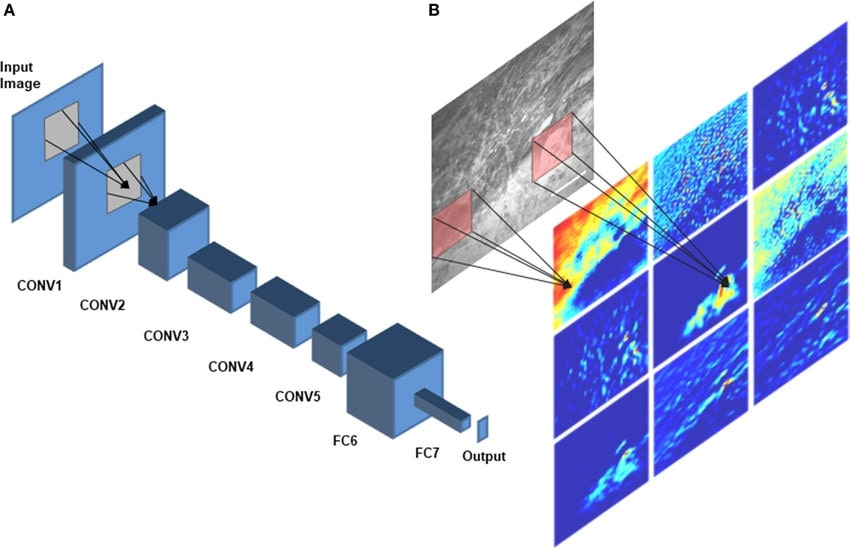

Convolutional Neural Networks (CNNs)
Convolutional Neural Networks (CNNs)
What is a CNN?
A Convolutional Neural Network (CNN) is a specialized neural network architecture designed primarily for processing grid-like data such as images. CNNs use mathematical operations called convolutions instead of general matrix multiplication in at least one of their layers.
A Convolutional Neural Network (CNN) is a specialized neural network architecture designed primarily for processing grid-like data such as images. CNNs use mathematical operations called convolutions instead of general matrix multiplication in at least one of their layers.
CNN Architecture Explained
| Layer Type | Purpose | Operation |
|---|---|---|
| Convolutional Layer | Feature extraction from input | Applies filters to detect patterns like edges, textures, etc. |
| Activation Layer (ReLU) | Introduces non-linearity | $f(x) = max(0, x)$ |
| Pooling Layer | Reduces spatial dimensions | Summarizes features (max or average) in a region |
| Fully Connected Layer | Classification based on features | Standard neural network connections |
Key Advantages of CNNs:
- Parameter Sharing: Same filter is applied across the entire image
- Sparse Connectivity: Each output value depends only on a small local region
- Translation Invariance: Can detect features regardless of their position
- Hierarchical Feature Learning: Early layers learn simple features, deeper layers learn complex ones
The Convolution Operation Explained
The 2D Convolution:
$$ (I * K)(i, j) = \sum_{m}\sum_{n} I(i+m, j+n) \cdot K(m, n) $$ where:
$$ (I * K)(i, j) = \sum_{m}\sum_{n} I(i+m, j+n) \cdot K(m, n) $$ where:
- $I$ is the input (e.g., image)
- $K$ is the kernel/filter
- $i,j$ are the coordinates in the output
- $m,n$ are the coordinates in the kernel
How Convolution Works:
- A small filter (kernel) slides over the input
- At each position, element-wise multiplication and sum are computed
- The result forms one element in the output feature map
- Different filters detect different features (horizontal edges, vertical edges, etc.)
Mathematical Details of CNN Components
1. Convolutional Layer
For a layer with input $X$ and kernel $W$, the output feature map $Y$ is:
$$ Y_{i,j,k} = \sum_{m=0}^{F_h-1} \sum_{n=0}^{F_w-1} \sum_{c=0}^{C_{in}-1} X_{i+m,j+n,c} \cdot W_{m,n,c,k} + b_k $$
where:
For a layer with input $X$ and kernel $W$, the output feature map $Y$ is:
$$ Y_{i,j,k} = \sum_{m=0}^{F_h-1} \sum_{n=0}^{F_w-1} \sum_{c=0}^{C_{in}-1} X_{i+m,j+n,c} \cdot W_{m,n,c,k} + b_k $$
where:
- $F_h, F_w$ are filter height and width
- $C_{in}$ is the number of input channels
- $b_k$ is the bias for the $k$-th filter
- $i,j$ are spatial coordinates in the output
- $k$ is the index of the output channel
2. Pooling Layer
Max Pooling with a $2 \times 2$ window and stride 2:
$$ Y_{i,j,k} = \max_{0 \leq m,n < 2} X_{2i+m, 2j+n, k} $$
Average Pooling with a $2 \times 2$ window and stride 2:
$$ Y_{i,j,k} = \frac{1}{4} \sum_{m=0}^{1} \sum_{n=0}^{1} X_{2i+m, 2j+n, k} $$
Max Pooling with a $2 \times 2$ window and stride 2:
$$ Y_{i,j,k} = \max_{0 \leq m,n < 2} X_{2i+m, 2j+n, k} $$
Average Pooling with a $2 \times 2$ window and stride 2:
$$ Y_{i,j,k} = \frac{1}{4} \sum_{m=0}^{1} \sum_{n=0}^{1} X_{2i+m, 2j+n, k} $$
3. Output Size Calculation
For a convolution with input size $I$, kernel size $K$, padding $P$, and stride $S$:
$$ \text{Output Size} = \left\lfloor \frac{I - K + 2P}{S} + 1 \right\rfloor $$
where $\lfloor \rfloor$ denotes the floor operation.
For a convolution with input size $I$, kernel size $K$, padding $P$, and stride $S$:
$$ \text{Output Size} = \left\lfloor \frac{I - K + 2P}{S} + 1 \right\rfloor $$
where $\lfloor \rfloor$ denotes the floor operation.
Why CNNs Work: The Theory
Key Theoretical Principles:
- Sparse Connectivity: Each neuron connects to only a small region, reducing parameters
- Parameter Sharing: Same weights used across different positions, enforcing translation equivariance
- Equivariance to Translation: If input shifts, output shifts by the same amount
Mathematical Proof of Translation Equivariance
Let's define a translation operator $T_u$ that shifts an input by $u$ pixels:
$$ [T_u(I)](x) = I(x-u) $$
For a convolution operation $f(I) = I * K$, we can prove:
$$ \begin{align} f(T_u(I))(x) &= [T_u(I) * K](x) \\ &= \sum_y T_u(I)(y) \cdot K(x-y) \\ &= \sum_y I(y-u) \cdot K(x-y) \\ \end{align} $$
With substitution $z = y-u$:
$$ \begin{align} f(T_u(I))(x) &= \sum_z I(z) \cdot K(x-(z+u)) \\ &= \sum_z I(z) \cdot K((x-u)-z) \\ &= [I * K](x-u) \\ &= T_u(f(I))(x) \end{align} $$
This proves that $f(T_u(I)) = T_u(f(I))$, demonstrating translation equivariance.
Let's define a translation operator $T_u$ that shifts an input by $u$ pixels:
$$ [T_u(I)](x) = I(x-u) $$
For a convolution operation $f(I) = I * K$, we can prove:
$$ \begin{align} f(T_u(I))(x) &= [T_u(I) * K](x) \\ &= \sum_y T_u(I)(y) \cdot K(x-y) \\ &= \sum_y I(y-u) \cdot K(x-y) \\ \end{align} $$
With substitution $z = y-u$:
$$ \begin{align} f(T_u(I))(x) &= \sum_z I(z) \cdot K(x-(z+u)) \\ &= \sum_z I(z) \cdot K((x-u)-z) \\ &= [I * K](x-u) \\ &= T_u(f(I))(x) \end{align} $$
This proves that $f(T_u(I)) = T_u(f(I))$, demonstrating translation equivariance.
Famous CNN Architectures
| Architecture | Year | Key Innovation | Performance |
|---|---|---|---|
| LeNet-5 | 1998 | First successful CNN for digit recognition | ~99% on MNIST |
| AlexNet | 2012 | ReLU, Dropout, GPU implementation | Top-5 error: 15.3% on ImageNet |
| VGGNet | 2014 | Small filters (3×3), deeper network | Top-5 error: 7.3% on ImageNet |
| ResNet | 2015 | Skip connections to solve vanishing gradient | Top-5 error: 3.57% on ImageNet |
ResNet's Skip Connection:
One of the most important innovations in CNN architecture was the residual block in ResNet, which can be expressed as:
$$ y = F(x, \{W_i\}) + x $$where $F$ is a residual mapping to be learned and $x$ is the identity mapping (skip connection).
Backpropagation in CNNs
Gradient Computation for Convolutional Layers
For a convolutional layer with weights $W$ and input $X$, the gradient of the loss $L$ with respect to $W$ is:
$$ \frac{\partial L}{\partial W_{m,n,c,k}} = \sum_{i,j} \frac{\partial L}{\partial Y_{i,j,k}} \cdot X_{i+m,j+n,c} $$
And the gradient with respect to the input is:
$$ \frac{\partial L}{\partial X_{i,j,c}} = \sum_{k} \sum_{m,n} \frac{\partial L}{\partial Y_{i-m,j-n,k}} \cdot W_{m,n,c,k} $$
For a convolutional layer with weights $W$ and input $X$, the gradient of the loss $L$ with respect to $W$ is:
$$ \frac{\partial L}{\partial W_{m,n,c,k}} = \sum_{i,j} \frac{\partial L}{\partial Y_{i,j,k}} \cdot X_{i+m,j+n,c} $$
And the gradient with respect to the input is:
$$ \frac{\partial L}{\partial X_{i,j,c}} = \sum_{k} \sum_{m,n} \frac{\partial L}{\partial Y_{i-m,j-n,k}} \cdot W_{m,n,c,k} $$
Why CNNs Excel at Image Processing
Biological Inspiration:
CNNs are inspired by the visual cortex in animals. The receptive fields of neurons in the visual cortex are localized, and different neurons respond to visual stimuli in restricted regions. Similarly, CNN filters respond to local patterns in their receptive fields.
Hierarchical Feature Learning:
- Early layers: Detect simple features like edges and corners
- Middle layers: Combine simple features into more complex patterns like textures
- Deep layers: Recognize high-level concepts like objects and faces
This hierarchical structure allows CNNs to build complex representations from simple building blocks.
Practical Considerations
Common Challenges:
- Overfitting: Especially with limited data
- Computational Cost: Training deep CNNs requires significant resources
- Vanishing/Exploding Gradients: Can make training very deep networks difficult
Best Practices:
- Data Augmentation: Artificially increase training data by applying transformations
- Batch Normalization: Normalize activations to stabilize training
- Transfer Learning: Use pre-trained models and fine-tune on specific tasks
- Regularization: Apply dropout or L2 regularization to prevent overfitting
References
- LeCun, Y., Bottou, L., Bengio, Y., & Haffner, P. (1998). Gradient-based learning applied to document recognition. Proceedings of the IEEE, 86(11), 2278-2324.
- Krizhevsky, A., Sutskever, I., & Hinton, G. E. (2012). ImageNet classification with deep convolutional neural networks. NeurIPS.
- He, K., Zhang, X., Ren, S., & Sun, J. (2016). Deep residual learning for image recognition. CVPR.
- Goodfellow, I., Bengio, Y., & Courville, A. (2016). Deep Learning. MIT Press.